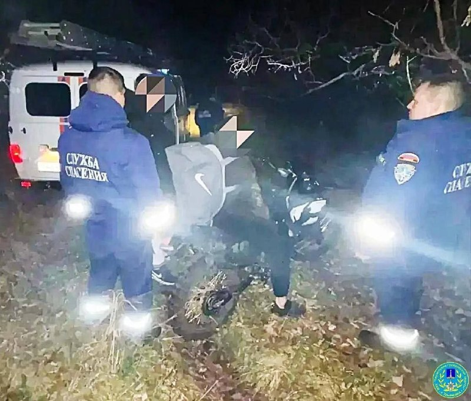

01
Общество и городская среда · событие дня
Во время поездки один из них упал в ледяную реку, но выбрался на берег
Когда мотоциклисты поняли, что не могут найти дорогу, они вызвали спасателей. К моменту прибытия экипажа мужчины сильно замёрзли и уже не могли идти самостоятельно. Спасатели развели костёр, дали им сухую одежду и горячее питьё, а затем на руках вынесли из леса и доставили к дороге.…